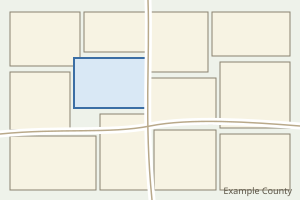

| ArcGIS REST Services Directory | Login |
| Home > services | API Reference |
| JSON |

Esc closes. Move the pointer onto the preview to keep it open.
Service
Extent
Also true
Supports dynamic layers, Supports statistics, Supports advanced queries, Export tiles allowed